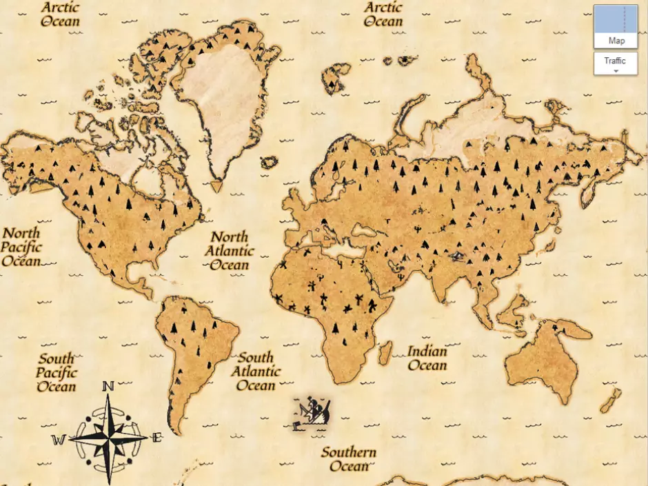

Descoberta do Tesouro
Um tesouro perdido há séculos foi encontrado na ilha de Cyberspace. A expedição, liderada pela Dra. Ada Lovelace, encontrou artefatos que revelam a história de um povo antigo.
- Localização: Monte Sintaxe, 12
- Data da descoberta: 25 de setembro
Leia mais sobre a descoberta em nosso blog.
Catálogo de Artefatos Encontrados
O time de arqueólogos digitais precisa catalogar todos os artefatos encontrados na cápsula do tempo. Para melhor compreensão dos dados, as informações foram organizadas em uma tabela acessível.
| Categoria | Artefato | Peso (kg) | Status |
|---|---|---|---|
| Manuscrito | Mapa Antigo | 0.8 | Em avaliação |
| Manuscrito | Diário de Bordo | 1.2 | Analisado |
| Joalheria | Amuleto de Jade (Pequeno) | 0.3 | Analisado |
| Joalheria | Amuleto de Jade (Grande) | 0.6 | Em avaliação |
| Ferramenta | Bússola Criptografada | 0.9 | Pendente |
| Total de Itens Catalogados: 5 | |||